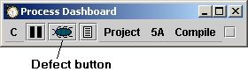
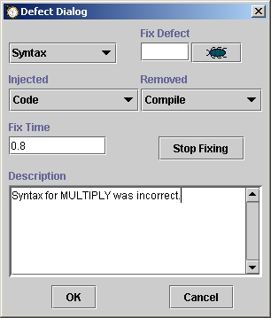

While compiling the program, many people will find that they have injected a defect during the previous phases. Such was the case for this program as well.
To enter a defect, click the defect button.

The first defect found by the student on this program was due to a syntax error. The defect dialog looks for this defect looks like the following:

The defect dialog allows entry of all the pertinent data about a defect. For more information about entering defects into the dashboard, see the Entering Defects help topic.
Of course, there were more defects found during compile, but we won't show them all.
Once all the defects that were found in compile have been entered and the program compiles cleanly, clicking the completion button moves us onward into the testing phase.
Next step: Testing the program
Jump to step:
START
1. Creating the project
2. Planning the project
3. Designing the program
4. Writing the code
5. Compiling the program
6. Testing the program
7. Postmortem